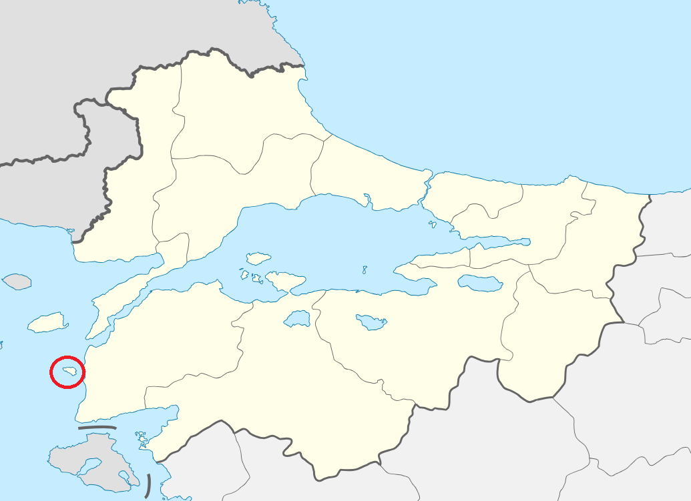
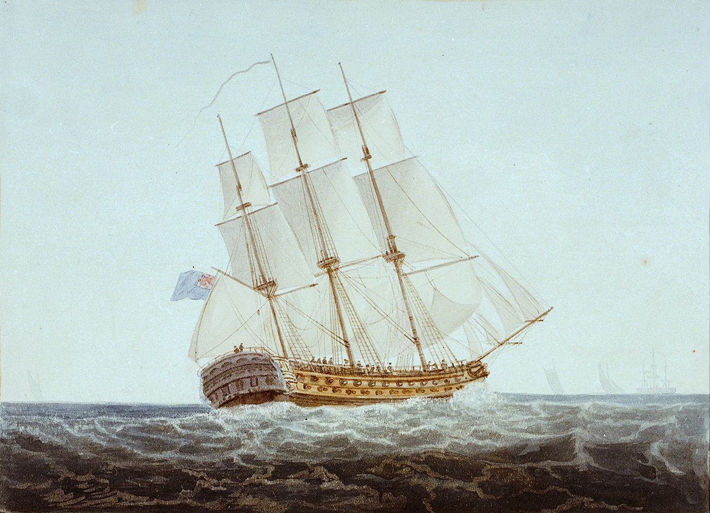
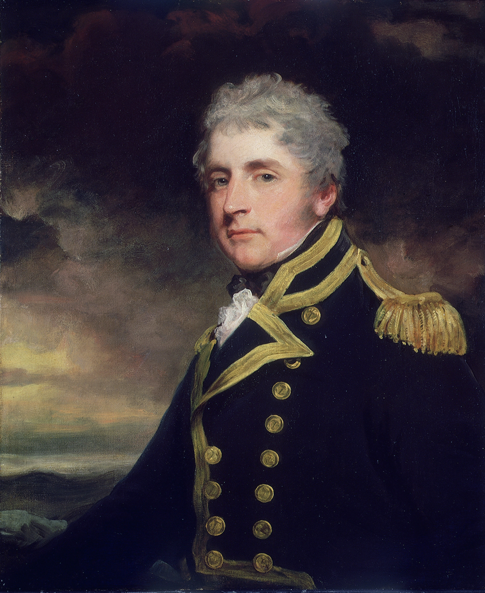
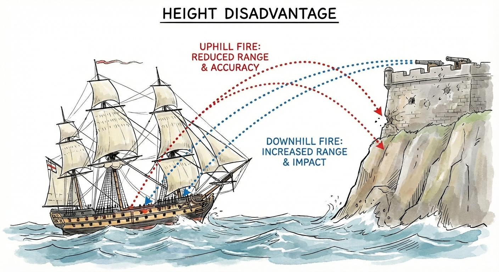
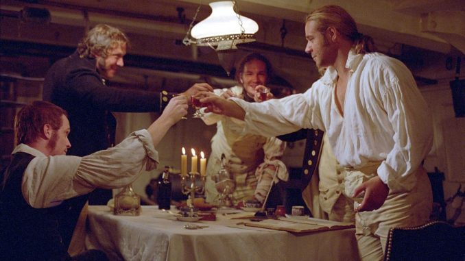

이스탄불 여행 (8) - 해협 속으로
게시: 2026-01-01T06:30:01+09:00
해군은 바다 위를 자유롭게 떠다니는 군함들로 이루어진 것이므로, 바다로 연결된 곳이기만 하면 얼마나 먼 곳이든 상관없이 밀고 들어갈 수 있을 것 같지만 실상은 그렇지 않습니다. WW2 때 미해군이 일본 본토를 침공하기 위해 남태평양 섬들과 필리핀, 오키나와 등을 하나씩 차례로 점령한 것에는 다 이유가 있었는데, 미국 본토에서 실어와야 하는 탄약과 연료, 각종 자재 등 보급품을 집적해놓을 중간 기지가 필요했기 때문이었습니다. 4~5만 톤급 거대한 전함과 항공모함으로 구성된 함대도 그럴 정도였으니, 19세기 초의 목조 범선들도 반드시 중간 기지가 필요했습니다. 물과 식량의 조달을 위해서도 중간 기지가 필요했지만, 특히 겨울철 파도가 거세지는 동부 지중해의 특성상 계속 바다에 떠있을 경우 수병들의 피로도는 둘째 치고 비바람에 의한 군함의 손상이 심해지기 때문에, 안전한 항구가 꼭 필요했던 것입니다. 당시 영국 해군은 부르봉 계통의 왕정이 통치하던 시칠리아 섬의 항구들을 비교적 자유롭게 이용할 수 있었지만, 여전히 다다넬즈 해협에서는 너무 멀었습니다. 다행히, 오스만 투르크와 전쟁에 돌입한 러시아가 발트 함대를 지중해로 이동시켜 다다넬즈 해협 입구의 테네도스(Tenedos) 섬을 점령하고 임시 해군 기지로 사용하고 있었으므로, 영국 함대도 테네도스의 러시아 해군 기지를 임시로 사용했습니다.

(테네도스 섬의 위치입니다. 왼쪽의 다다넬즈 해협과 오른쪽 보스포러스 해협 사이에 있는 비교적 넓은 바다가 마르마라(Marmara) 해입니다.) 이렇게 1807년 2월 초 덕워쓰 제독의 함대가 다다넬즈 해협 입구쪽에 집결하여 언제든 이스탄불로 쳐들어올 준비를 하고 있다는 소식은 당연히 이스탄불에도 전해졌습니다. 다다넬스와 보스포러스에는 언제나 지중해와 흑해 사이를 오가는 선박들이 많았고, 영국 함대가 이들의 눈을 피할 방법은 없었기 때문이었습니다. 이스탄불에서는 프랑스 대사인 세바스티아니아와 기타 프랑스 공병 장교들의 도움을 받아 해안 포대를 정비하는 등 손님맞이 준비에 들어갔고요. 2월 11일 드디어 테네도스 항구를 떠나 다다넬즈 해협으로 진입하려던 덕워쓰 제독의 여정은 시작부터 순조롭지 못했습니다. 바람이 충분치 않아 다다넬즈 해협으로 진입할 수가 없었던 것입니다. 그렇게 며칠 동안 다다넬즈 해협 입구에서 앉은뱅이 신세로 시간을 낭비하고 있던 덕워쓰 함대에는 불운이 겹쳤습니다. 주력 전열함 8척 중 하나인 HMS Ajax를 사고로 상실해버린 것입니다. 에이잭스 호는 넬슨 제독의 지휘하에 트라팔가 해전에도 참전했던 베테랑 전열함이었는데도 그런 사고가 발생했습니다. 에이잭스 호는 2월 11일, 갑자기 화재가 발생한 뒤 떠내려가 테네도스 섬에 좌초한 뒤, 다음 날 탄약고 폭발을 일으키며 산산조각이 나버렸습니다. 총 630명의 승조원 중 380명은 바다에 뛰어들어 목숨을 건졌습니다만 250명이 사망했습니다. 이 화재 원인에는 2가지 설이 있는데, 하나는 그 보급관(purser)가 부하들과 빵 저장고(bread room)에서 일을 한 뒤 부주의하게도 등불을 내버려두고 가버린 바람에 거기서 불이 났다는 이야기이고, 다른 하나는 대장간용 연료로 보관하고 있던 석탄에서 자연발화가 일어났다는 이야기도 있습니다.

(HMS Ajax의 모습입니다. 에이잭스를 포함한 74문짜리 전열함은 적절한 화력과 기동성의 조합을 갖췄다는 평가를 받으며 당시 영국 해군에서 가장 많이 쓰이던 함종이었습니다. 100문의 포를 갖춘 1급함도 있었으나, 그렇게 큰 전열함들은 기동성 측면에서 뒤떨어지며 가성비도 떨어진다는 평가를 받습니다.)

(에이잭스의 함장인 블랙우드(Henry Blackwood)는 거의 매일 채찍질 형벌을 휘두르며 엄정한 군기를 중요시하던 사람이었습니다. 그런 사람이 지휘하던 배에서 그런 화재 사고가 일어난 것은 꽤 의외인데, 아무튼 함장인 블랙우드는 에이잭스의 상실에 대해 열린 군사재판에서 무죄 방면되었고, 곧 다른 전열함인 HMS Warspite를 배정받았습니다.) 원래부터 이스탄불 공략에는 부족한 전력이었는데 전투가 시작되기도 전에 사고로 주력함 전력의 1/8이 상실되었으니 이 임무의 성공 여부는 꽤 불투명해진 셈이었습니다. 하지만 마침내 2월19일 바람 방향이 유리하게 바뀌자, 덕워쓰 함대는 용기를 내어 다다넬즈 해협으로 진입했습니다. 이들을 기다리던 첫 번째 장애물은 다다넬즈 해협 양안에 위치한 요새들과 성채에 배치된 포대였습니다. 그 해협을 빠져나갈 때까지는 꼼짝없이 해변의 포대에서 날아오는 포탄을 뒤집어써야 하므로 다다넬즈 해협처럼 가장 좁은 곳이 1.2km에 불과할 정도로 특좁고 긴 해협은 군함들에게 그야말로 죽음의 골짜기나 마찬가지였습니다. 이때 전열함에서도 해변의 포대에게 함포를 쏘면 되는 것 아닌가 생각할 수도 있겠습니다만, 기본적으로 나무로 만든 전열함과 돌로 만든 요새 속에 숨어있는 포대와의 대결은 전열함에게 무조건 불리했습니다. 게다가 전열함과 육상 포대가 같은 32파운드 포를 쓰더라도, 해변의 포대가 대부분 높은 언덕 위에 위치하고 있으므로 사거리나 파괴력에 있어서도 무조건 해안 포대가 유리했습니다.

(항공기와 수상함, 항공기와 지상 포대와의 싸움에서도 무조건 항공기가 유리한 이유는 바로 그 높이 때문입니다. 지구 위의 모든 존재는 중력의 지배를 받는데다, 높이 있는 자가 더 넓고 멀리 관측할 수 있으니까요.) 이렇게 유리한 위치에 있던 오스만 투르크의 포대들은 함대가 사정거리 안에 들어오자 불을 뿜기는 했는데... 생각보다는 그 포격의 횟수는 많지 않았습니다. 덕워쓰 함대에서는 이걸 '라마단이 끝난 직후라서 군기 빠진 오스만 투르크군이 포대에 제대로 배치가 되지 않은 모양'이라고 평가했으나, 실은 라마단이 끝난 것은 1806년 12월 11일로서, 라마단과는 무관한 일이었습니다. 그냥 오스만 투르크군의 평상시 대비 태세가 그 모양이었던 것입니다. 아무튼 덕분에 덕워쓰 함대는 재빨리 다다넬스 해협을 통과하여, 비교적 넓은 바다인 마르마라(Marmara) 해로 진입하여 한숨 돌릴 수 있었습니다. 당시 영국 해군 장교들이 즐겨쓰던 건배사들 중에는 이런 것이 있습니다. "A Willing Foe and Sea Room!" (싸우려는 적과 넉넉히 넓은 바다를 위하여!)

(영국 해군 프리깃함의 함장과 장교들이 식사하며 건배하는 장면입니다. 2003년 영화 'Master and Commander: The Far Side of the World'에서의 한 장면입니다. 이 원작 소설인 Aubrey & Maturin 시리즈는 영미권에서는 워낙 유명하여 동양권의 삼국지 정도의 영향력을 갖습니다만, 영화 흥행은 그 완성도에 비해 기대에 좀 못 미쳤다고 합니다. 저는 매우 재미있게 보았습니다.) 이는 영국 해군의 오만함을 보여주는데, 언제나 적함이 자기 항구로 도망치는 것이 문제일 뿐, 해협이나 만이 아니라 넓은 바다에서 적함이 싸우려고 다가오는 상황이라면 자신들이 반드시 이긴다는 신념의 표현이었습니다. 마르마라 해로 진입하면서 약간 넓은 바다를 갖게 된 덕워쓰 함대는 이제 자신감을 가지고 오스만 함대를 찾았는데, 불행히도 오스만 함대는 'willing foe'는 아니었습니다. 이들은 해변 근처에서 64문짜리 전열함 하나와, 프리깃함 및 슬룹(sloop)함 8~9척으로 이루어진 오스만 함대를 찾아냈으나, 이들은 영국 함대를 보자마자 이스탄불 쪽으로 도망쳤습니다. 덕워쓰 함대는 이들을 추격하여 그 중 작은 코벳함과 포함 두어 척을 나포하고 해변에도 상륙하여 적의 대포 2문을 노획했으나, 딱히 큰 전과는 아니었습니다. 이 임무의 진짜 목표는 이스탄불이었는데, 과연 이스탄불의 오스만 투르크군도 여태까지처럼 만만한 상대였을까요?